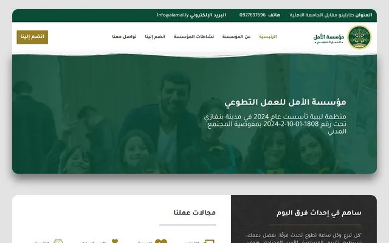
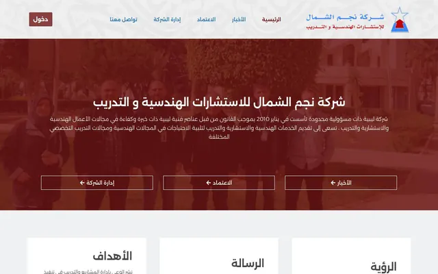
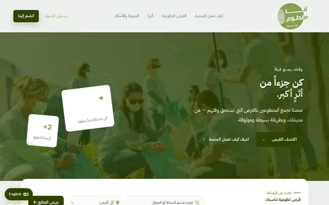
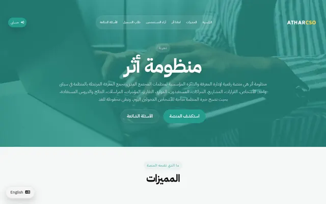
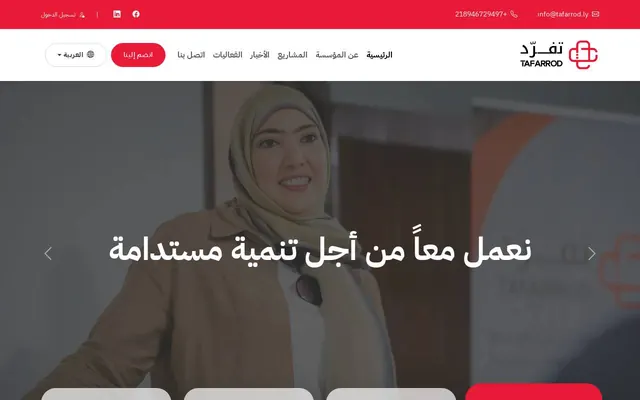

Ciao, sono Awam. Faccio siti WordPress e applicazioni in PHP.
Sviluppo siti web dal 2017, prima in Libia e ora dall'Italia. Vivo a Milano e lavoro da remoto.
Lavoro soprattutto con WordPress (temi, Elementor, WooCommerce) e con PHP e CodeIgniter quando serve qualcosa su misura: gestionali, portali con login, API per app mobile. Mi occupo anche della manutenzione dei siti dopo la consegna.
Cerco collaborazioni con agenzie web, a progetto o continuative, o un posto da sviluppatore da remoto.
Cosa posso risolvere per te
I problemi che mi portano più spesso, e come li risolvo.
"Il sito è lento e su telefono si carica male."
Comprimo le immagini, sistemo cache e plugin pesanti e, se serve, cambio hosting. Misuro con PageSpeed prima e dopo, così vedi la differenza.
"Nessuno aggiorna il sito, e ho paura che si rompa."
Manutenzione mensile: backup, aggiornamenti provati prima su una copia, controlli di sicurezza e correzione degli errori.
"Ho un design in Figma, mi serve qualcuno che lo trasformi in un sito."
Lo realizzo in WordPress, con Elementor o con un tema su misura, fedele al design e facile da modificare per il cliente.
"Voglio vendere online."
Negozio WooCommerce con prodotti, pagamenti, spedizioni ed email d'ordine, più piccoli plugin quando serve qualcosa di specifico.
"Le richieste dal sito si perdono, o le copio a mano."
Collego il modulo del sito al CRM, a Google Sheets e alla posta con Make: ogni richiesta viene salvata, ricevi un avviso e il cliente una risposta subito.
"Excel e le email non bastano più per gestire il lavoro."
Costruisco un gestionale su misura in PHP e CodeIgniter: accesso con utenti e ruoli, archivio, report in PDF, e se serve un'app collegata.
"Il sito non si trova su Google."
Sistemo la SEO tecnica: titoli, struttura, sitemap, velocità, Search Console e Analytics, così sai da dove arrivano le visite.
"In agenzia abbiamo più lavoro che sviluppatori."
Entro nel vostro flusso da remoto, a progetto o per qualche giorno al mese, e lavoro sui vostri strumenti e con le vostre regole.
Automazioni
Molti lavori ripetitivi si possono togliere di mezzo. Uso soprattutto Make, collegato a Gmail, Google Sheets, CRM e moduli dei siti. Ecco tre esempi di flussi che ho costruito.
1. Le richieste dal sito finiscono nel CRM
Qualcuno compila il modulo contatti. La richiesta viene salvata nel CRM, il cliente riceve una risposta automatica e tu un avviso con tutti i dettagli. Nessuna richiesta resta in una casella di posta.
Nuova richiesta: preventivo sito web
| Nome | Giulia Bianchi |
|---|---|
| giulia@studiobianchi.it | |
| Servizio | Sito WordPress |
| CRM | Salvato · da ricontattare |
2. Candidature e risposte in un foglio, con un riepilogo ogni mattina
Le email delle aziende vengono riconosciute e registrate in Google Sheets con data, azienda e stato. Ogni mattina arriva un'email con chi ha risposto e chi va ricontattato. Lo uso io per la mia ricerca di lavoro.
| Data | Azienda | Ruolo | Stato |
|---|---|---|---|
| 03/11 | Agenzia Web Nord | WordPress dev | Colloquio |
| 05/11 | Studio Pixel | PHP dev | In attesa |
| 07/11 | Digital Lab | Full stack | Ricontattare |
3. Contatti dalle campagne con promemoria automatici
In Formagroup i contatti arrivavano dalle campagne pubblicitarie. Ogni nuovo contatto veniva assegnato nel CRM a un consulente; se nessuno lo chiamava entro due giorni partiva un promemoria, e ogni settimana arrivava un report.
Nomi e dati negli esempi sono inventati. Se mi descrivi un lavoro che fate a mano ogni settimana, ti dico se e come si può automatizzare.
Lavori
Alcuni siti che ho fatto e che sono online. Quasi tutti sono in arabo, per clienti in Libia.

Fondazione Al-Amal
Il sito della fondazione: chi sono, le campagne, i partner e i moduli per diventare volontario o fare una donazione. Tutto in arabo.
WordPress, Elementor, tema Neve · al-amal.ly

Najm Al-Shamal
Sito aziendale con servizi, corsi e notizie, più una pagina dove si può verificare se un attestato è valido.
WordPress, Elementor, tema Neve · najm-ashamal.ly

I Volunteer
Piattaforma per trovare attività di volontariato in Libia. Gli utenti cercano per città, si candidano, seguono le candidature dal loro profilo e ricevono un attestato a fine attività. C'è anche un'app per telefono.
PHP, CodeIgniter 4, MySQL, Flutter · i-volunteer.ly

Athar
Un gestionale in arabo dove le associazioni registrano progetti, membri, documenti e conti, e stampano i report.
PHP 8, CodeIgniter 4, MySQL · atharcso.org

Tafarrod
Sito in arabo e inglese per un'organizzazione di Bengasi. Progetti, eventi e notizie si aggiornano da un pannello che ho scritto io.
PHP, MySQL · tafarrod.ly
Competenze
Gli strumenti che uso e a cosa mi servono.
WordPress
WordPress, Elementor, WooCommerce, child theme, plugin
Siti aziendali, landing page e negozi online che il cliente può aggiornare da solo.
PHP e database
PHP 8, CodeIgniter 4, MySQL, REST API, AJAX
Gestionali, portali con login e ruoli, API per app mobile, report in PDF.
Frontend
HTML, CSS, JavaScript, Bootstrap
Pagine responsive e multilingua, anche da destra a sinistra per l'arabo.
Automazioni e integrazioni
Make, webhook, Gmail, Google Sheets, CRM (Squadd)
Collegare sito, email, fogli e CRM perché i dati passino da soli.
SEO e marketing
Google Search Console, Google Analytics, Google Ads
Capire da dove arrivano le visite, sistemare la SEO tecnica, gestire campagne.
Server e messa online
cPanel, hosting, domini, caselle email, Git e GitHub
Pubblicare, migrare e tenere in ordine siti e posta.
Design
Figma, Photoshop
Leggere un design, preparare mockup e grafiche per il web.
App e altro
Flutter, Python, ASP.NET
App mobili collegate alle piattaforme, script e vecchi sistemi.
Sviluppo con l'AI
Claude Code, Codex, Antigravity
Mi fanno lavorare più veloce. Il codice lo controllo e lo provo io prima di consegnarlo.
Lingue: arabo (madrelingua), italiano (B2), inglese (B2)
Esperienza
- 2017 – oggiWeb developer freelanceSiti e piattaforme per aziende e associazioni, soprattutto in Libia
- 2025 – 2026IT Manager & Marketing · Formagroup, MilanoSiti aziendali, CRM interno, campagne Google Ads e supporto IT
- 2023 – 2024IT tutor e helpdesk · Comune di ModenaServizio Civile Universale: corsi di informatica per i cittadini
- 2021 – 2022Supporto tecnico · Altair Handling, LibiaHo sviluppato un sistema per stampare le carte d'imbarco con una compagnia aerea partner
- 2019 – 2020Sviluppatore desktop · Ministero dell'Istruzione libicoSistema di gestione degli esami nazionali a risposta multipla
Studio Ingegneria Informatica all'Università di Modena e Reggio Emilia.
Contatti
Il modo più veloce è scrivermi una email.
awam.develops@gmail.com
linkedin.com/in/awam-develops
github.com/awam97
Scarica il CV (PDF)